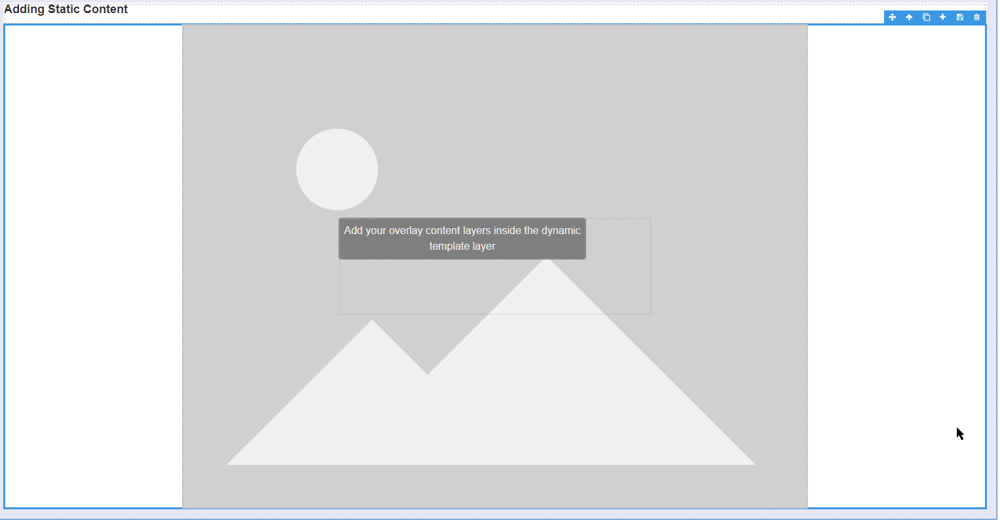

Image Map
The Image Map Block allows you to render dynamic and static content onto an Image. You can drag on content such as indicators or text and these render on top of the image at runtime, at the specified coordinates.
The Image Map Block accepts an image, and this aspect ratio is maintained when the Block is resized on the canvas; at run-time when the window is resized; or the App is launched on differently sized displays, such as a tablet or a large control room monitor.
Static and/or dynamic data can be added and their aspect ratio is also maintained so that they autoscale with the image.
The static content is a container used to lock the position of other Blocks, for example, to show general information on the corners of a plant diagram. For the best results, specify the position as a percentage and the text size as vh/vw.
Note
vw and vh are length units representing 1% of the viewport size for viewport width (vw) and height (vh), respectively. They are ideal for specifying size - especially text - in a responsive design because they are independent of the base font size.
A dynamic template is a container of other Blocks, linked to a data source. An instance of the template will show at run-time for each data point returned by the data source, positioned at the data point's specified X and Y coordinates.
Multiple dynamic templates can be added if data points have different behavior and/or different data sources/filters. For example, you may have a different color indicator and a different drill-down action per asset type, such as conveyors, borers, and crushers.
Besides autoscaling, the second feature of the Image Map Block is a tooltip located top left of the image to tell you the exact X/Y coordinates of any point on the image at design time. Move your mouse across the image on the canvas to decide the exact placement of data points or static content.
Image Map Properties
Appearance
Common Properties
The visibility property is common to most Blocks;
See the Common Properties article for more details on common appearance properties.
Image Source
Choose whether the image is stored in App Files (default) or Embedded.
The App Files option, added in v4.4.17, is the recommended image source - embedded files bloat the app size and cannot be copied/downloaded/reused.
Image
Select the background Image.
Tooltip
A tooltip in the top left corner of the image shows the coordinates of the mouse location when hovering over the canvas. You can use this at design time to determine the X/Y position to render your static and dynamic content.
Dynamic Templates
Dynamic Templates are layers on the Image Map Block that act as containers for additional Blocks like Text, Indicator, etc. These Blocks can be bound to values that come from the Dynamic Template's Data Source. A Text Block is added by default to get you started - it can be amended or replaced.
One Dynamic Template is added by default and cannot be removed. No instances will show during run-time unless its Data Source, X Value, and Y Value are configured.
Data Source
Common Properties
The Data Source property is common to most Blocks;
See the Common Properties article for more details on common Data Source properties.
Data
X Value
The X Value determines the horizontal position of the Dynamic Template's run-time instances. Acceptable values are percentages, i.e. between 0 and 100.
Y Value
The Y Value determines the vertical position of the Dynamic Template's run-time instances. Acceptable values are percentages, i.e. between 0 and 100.
Note
The X and Y Values determine the run-time position of each instance of the dynamic template. You can adjust the template's position on the canvas under block styling.
Positioning
Although the runtime position is determined by the X and Y values, you can amend the canvas position by changing the top and left percentages in the Block Styling menu's Advanced position and displayed styling accordion.
You can also change the Width and Height to a percentage or vw/vh in the Dimension accordion, and font size to vw/vh in the Typography accordion to ensure that the text is responsive.
Adding a Dynamic Template
To add another Dynamic Template, select any Dynamic Template and click on the plus button in the top right Block toolbar.
Removing a Dynamic Template
To remove a Dynamic Template, select the Dynamic Template and click on the delete button in the top right Block toolbar.
Note
The default Dynamic Template cannot be removed.
Static Content
Static Content is a layer on the Image Map Block that acts as a container to lock the position of additional Blocks like Text, Indicator, etc.
A Text Block is added by default to get you started. It can be amended or replaced.
Positioning
Unlike Dynamic Templates, the canvas and the runtime position are the same for Static Content. You can manually position it anywhere on the image by changing the top and left percentages in the Block Styling menu's Advanced position and displayed stylingaccordion.
You can also change the Width and Height to a percentage or vw/vh in the Dimension accordion, and font size to vw/vh in the Typography accordion to ensure that the text is responsive.
Adding Static Content
To add Static Content, select the Image Map Block and click on the plus button in the top right Block toolbar.
Note
If your Image layer covers the Image Map, click the up button in the top right Block toolbar.

Removing Static Content
To remove Static Content, select it and click on the delete button in the top right Block toolbar.
Binding Data To Static Content
Add a Box Block to reference a Data Source within the Static Content layer - such as Live Data from Data Streams. Once a Data Source has been configured for the Box, you can bind data on any blocks added inside via the Dynamic Properties option.
Last modified: July 21, 2025